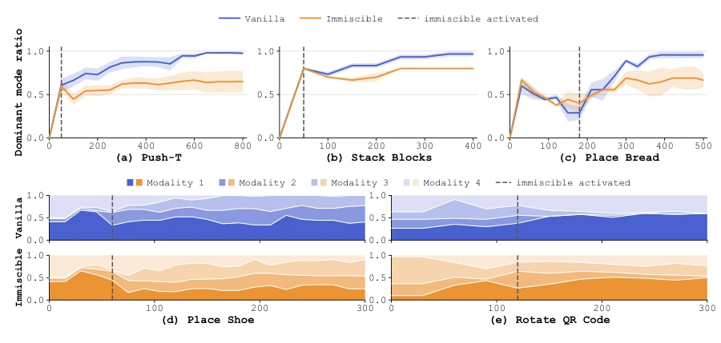

Fig. 1. Action-noise assignment and action-modality preservation in Push-T. Upper: in low-dimensional action spaces, diffusion paths from different modalities can substantially overlap. Random action-noise pairing in vanilla Diffusion Policy increases path mixing and weakens modality-specific denoising responses. Our batch-wise Hungarian assignment instead introduces modality-dependent organization in the noise space, keeping multiple action modalities reachable without modality labels. Lower: vanilla policy generates trajectories in a single modality, while ours produces a balanced 1:1 distribution. Both policies are trained with the same seed and sampled ten times from a fixed observation. Each column uses the same initial noise.
Fig. 2. Noise-space organization on Push-T. Noise samples are projected onto modality-related and orthogonal axes and colored by paired-action modality. The orthogonal axis has no specific meaning and is included only for visualization. Hungarian assignment yields clearer modality-dependent structure than independent pairing.
Fig. 4. Real-world humanoid tasks. Left: Fruit-to-Plate; right: Can-to-Bin. Rows show the initial state and actions using either arm, corresponding to the two valid modalities in each task.

Fig. 5. Evolution of modality distributions throughout training. The horizontal axis denotes training epoch. Upper: dominant-modality proportion for three 2-modality tasks, shading denotes standard error; Lower: modality composition for two 4-modality tasks. Results average N seeds from Tab. I, dashed lines mark assignment activation.